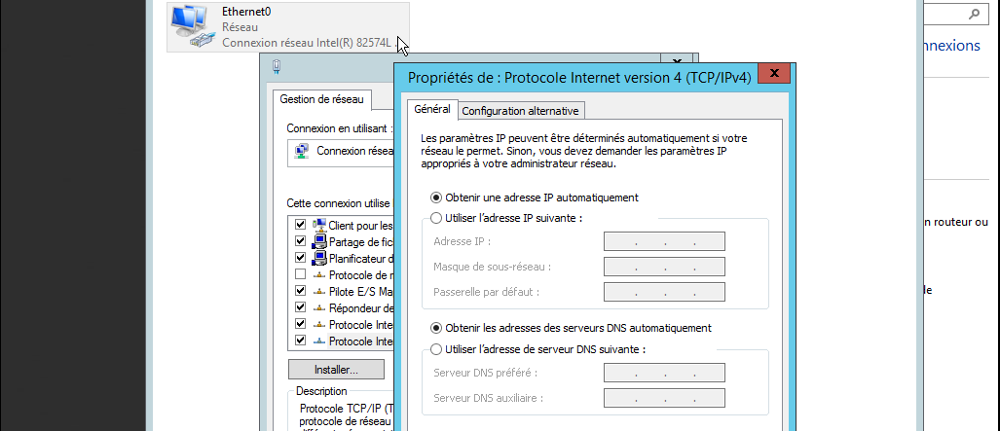
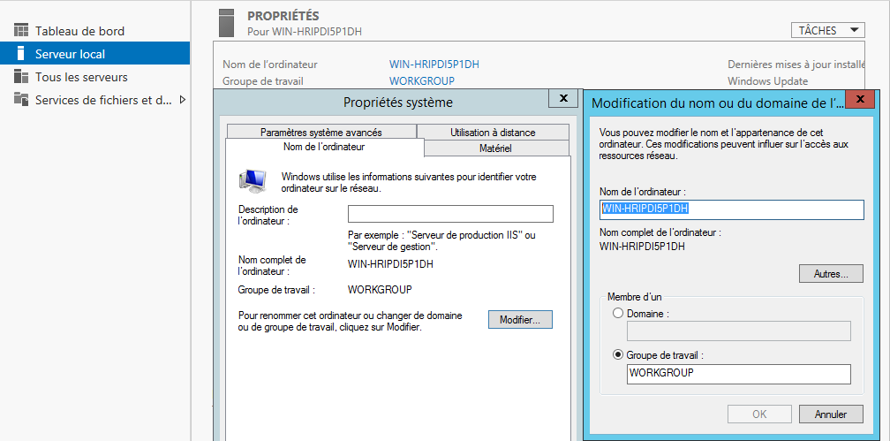
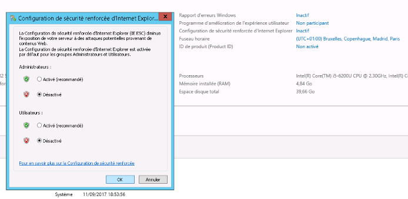
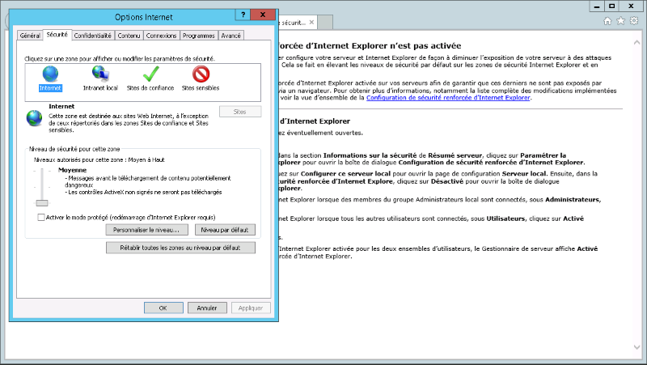

• La machine est maintenant officiellement installée, et nous avons accès au bureau, au tableau de bord du serveur, et à toutes les fonctionnalités possibles.
Avant de commencer à installer des services spécifiques, il reste deux étapes cruciales : la configuration réseau et la configuration du nom netbios.
La configuration réseau s’effectue au sein du centre réseau et partage, dans les propriétés de la carte réseau, sous l’onglet Protocole Internet version 4 (TCP/IPv4). Etant donné que le serveur risque d’avoir une adresse IP fixe, c’est le moment de l’indiquer.

• Enfin, le nom netbios doit être modifié. Celui-ci est une suite de caractères alphanumériques aléatoire par défaut, ce qui risque de causer des conflits avec certains services. Pour le changer, rendons-nous sur le tableau de bord, dans l’onglet “Serveur local”, en face de la ligne “Nom de l’ordinateur”. En cliquant sur le nom actuel de la machine, une fenêtre nous proposera de modifier le nom netbios.

• Pour que les paramètres netbios soient à jour, un redémarrage sera nécessaire pour continuer.
Pour terminer, si le serveur a besoin d'accueillir des logiciels tiers provenant d’internet, ou qu’il est nécessaire de naviguer sur Internet Explorer pour une raison ou une autre, il est plus commode de désactiver temporairement les protections de ce dernier.
Pour ce faire, rendons-nous encore une fois dans les paramètres du serveur local sur le tableau de bord. La ligne à identifier se nomme “Configuration de sécurité renforcée d’internet explorer”. Par défaut, celle-ci est paramétré sur “Activé”. Il suffit de la passer en mode “inactif”.

• Il reste enfin à ouvrir internet explorer, dans l’onglet des paramètres, sous “Sécurité”, et d’abaisser le niveau de sécurité pour internet.

• Attention tout de même aux conséquences de tels modifications sur un serveur en production.
Et voilà, le serveur est maintenant prêt à accueillir différents services !